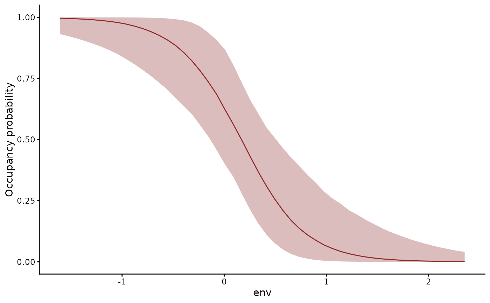
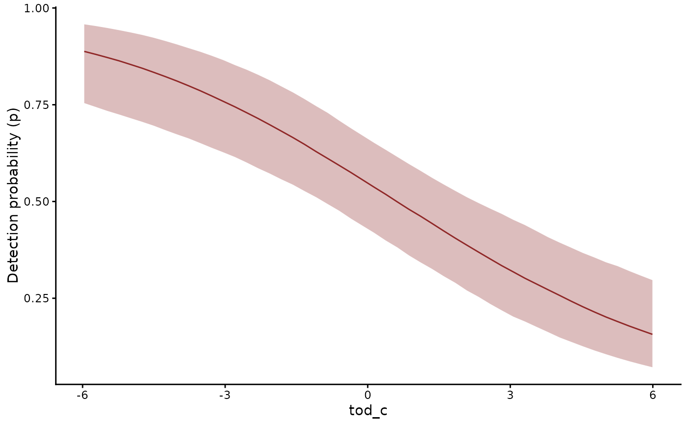

For detections recorded on repeated visits to sites whose occupancy
stays fixed across the visits, such as camera-trap or call surveys
within a season. The data hold one row per visit with a 0 / 1
response. The visits sharing a series and a time belong to one
closure unit, which is occupied with probability mu. A visit to an
occupied unit detects the species with probability p. The
likelihood sums over the unit's two states. A unit with a detection
is occupied for certain (MacKenzie et al. 2002).
Arguments
- multi_season
Logical.
TRUEkeys a closure unit on(series, site, time), for several seasons of visits to each site. The data then need asitecolumn, whichpivot_detection_array()creates from a four-dimensional array withmulti_season = "hierarchical". Each unit holds the visits of one site in one season.
Details
bf(y ~ elev, p ~ tod) models occupancy and detection, each with
its own formula on the logit link. predict() with
type = "latent_state" gives the probability that each unit is
occupied given its detections. type = "detection" gives the
detection probability of each visit. The data need no cap column.
Priors
The occupancy intercept takes brms's student_t(3, 0, 2.5) on the
logit scale. A scalar p takes beta(1, 1). With a formula, its
intercept takes normal(0, 1.5). get_prior() lists the defaults,
and prior(..., dpar = "p") replaces one.
Identification
The detections identify occupancy and detection apart through
repeated visits and through covariates that act on one of them.
With one visit per unit and no covariate, the data identify only
the product mu * p. Only the priors then set the two apart (Royle
and Dorazio 2008). mvgam() warns on such data. It also warns when
more than 30% of units have a single visit.
Joint species models
jsdgam() with nmix() or occ() fits several species at once.
Latent factors shared by the species enter the state mu. p
keeps its own formula. factor_formula = ~ s(env, by = lv_axis())
lets each factor follow an environmental gradient.
Importing array data
Detection histories from unmarked, spOccupancy or
ubms come as a site-by-visit matrix, an array with species or
seasons as further dimensions, or a list of matrices.
pivot_detection_array() converts any of these to the long format,
broadcasting site, season and visit covariates to their rows.
Threading
The density sums over units through Stan's reduce_sum(). Fitting
with threads = 2 or more splits the units across threads.
References
MacKenzie, D. I., Nichols, J. D., Lachman, G. B., Droege, S., Royle, J. A. and Langtimm, C. A. (2002). Estimating site occupancy rates when detection probabilities are less than one. Ecology, 83, 2248-2255. doi:10.1890/0012-9658(2002)083[2248:ESORWD]2.0.CO;2
Royle, J. A. and Dorazio, R. M. (2008). Hierarchical Modeling and Inference in Ecology. Academic Press.
See also
nmix() for the related N-mixture family and
pp_check.mvgam() for closure-unit goodness-of-fit checks. The
N-mixture article fits occupancy and
N-mixture models from data preparation to inference. The
data article sets out the row layout
that occ() expects.
Other observation families:
beta_nb(),
categ(),
com_binomial(),
diri(),
multi(),
mvgam_families,
mvn(),
mvt(),
nmix(),
tweedie()
Examples
# \dontrun{
# Detections at 50 sites, each visited four times, with covariates
# on occupancy and on detection
set.seed(6)
simdat <- sim_closure_unit_data(family = occ(), n_species = 1L,
n_sites = 50L, n_visits = 4L,
type = 1L)
mod <- mvgam(
bf(y ~ env, p ~ tod_c),
data = simdat$data_train,
family = occ(),
chains = 2,
silent = 2
)
summary(mod)
#> Family: occ
#> Links: mu = logit; p = logit
#> Formula: y ~ env
#> p ~ tod_c
#> Data: simdat$data_train (Number of observations: 200)
#> Draws: 2 chains, each with iter = 2000; warmup = 1000; thin = 1;
#> total post-warmup draws = 2000
#>
#> == Observation Model ==
#> Regression Coefficients:
#> Estimate Est.Error l-95% CI u-95% CI Rhat Bulk_ESS Tail_ESS
#> Intercept 0.57 0.55 -0.39 1.93 1.00 1538 656
#> p_Intercept 0.20 0.25 -0.29 0.67 1.00 1802 1415
#> env -3.39 1.33 -6.73 -1.53 1.00 1323 684
#> p_tod_c -0.32 0.07 -0.46 -0.19 1.00 1557 1235
#>
#> Draws were sampled using sampling(NUTS). For each parameter, Bulk_ESS
#> and Tail_ESS are effective sample size measures, and Rhat is the potential
#> scale reduction factor on split chains (at convergence, Rhat = 1).
#>
#> Next steps:
#> - `pp_check(fit, type = "fit_stat")`: goodness of fit of unit totals
#> - `plot(hindcast(fit, type = "latent_state"))`: posterior occupancy of each unit
#> - `forecast(fit, newdata = ...)`: out-of-sample forecasts
#> - `loo(fit)` / `loo_compare(...)`: model fit + comparison
#> - `conditional_effects(fit)`: covariate effects
#> Use `how_to_cite(fit)` for a methods paragraph and `methods_md(fit)` for its equations.
# Occupancy along the gradient and detection through the day
conditional_effects(mod, effects = "env", type = "latent_state")

conditional_effects(mod, effects = "tod_c", type = "detection")

# Occupancy and detection, separated by the model
head(predict(mod, type = "latent_state"))
#> Estimate Est.Error Q2.5 Q97.5
#> [1,] 0.0086866838 0.010677338 6.449184e-04 0.037142604
#> [2,] 1.0000000000 0.000000000 1.000000e+00 1.000000000
#> [3,] 0.0021941391 0.002930510 9.081584e-05 0.009570831
#> [4,] 0.0007467295 0.001611732 1.446900e-06 0.004467827
#> [5,] 1.0000000000 0.000000000 1.000000e+00 1.000000000
#> [6,] 1.0000000000 0.000000000 1.000000e+00 1.000000000
head(predict(mod, type = "detection"))
#> Estimate Est.Error Q2.5 Q97.5
#> [1,] 0.5684387 0.06049648 0.4494888 0.6828272
#> [2,] 0.7550441 0.06270948 0.6263217 0.8647674
#> [3,] 0.8010297 0.06097720 0.6696028 0.9021430
#> [4,] 0.6084693 0.06127130 0.4904712 0.7247093
#> [5,] 0.2948871 0.06361095 0.1823649 0.4307495
#> [6,] 0.6624404 0.06240768 0.5414586 0.7799391
# Next, pp_check(mod, type = "fit_stat") tests the fit of each unit
# }